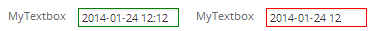

Overview
 Date fields allow the user to enter dates into DynaForms.
Date fields allow the user to enter dates into DynaForms.
Clicking on a date field opens a calendar popup where the user can select the date. This helps standardize date formats and eliminates many careless errors. Date fields offer two buttons to the right of the field. The first opens the calendar popup, just like clicking on the data field. Clicking on the second button clears the date and set it to zero.
Properties
- Field Name *Required
- Label
Start and End Dates
Relative Start and End Dates
Behavior
- Mask
- Showtime: Change this value to 1 to enable the time selection.
- Required
- Read Only
- Dependent Fields
- Default Value
Appearance
Date fields contain a mask, which by default is "%Y-%m-%d" and produces dates in a format like "2009-12-31". ProcessMaker version 2.0 has added a number of new masks, so that date formats can be customized to a much greater degree:
| Code | Represents |
|---|---|
| %a | 2 letter abbreviated weekday name: Su, Mo, etc. |
| %A | Full weekday name: Sunday, Monday, etc. |
| %b | 3 Letter abbreviated month name: Jan, Feb, etc. |
| %B | The full month name |
| %C | The century number. Year 2012 is in the 21st Century |
| %d | The day of the month (range 01 to 31) |
| %e | The day of the month (range 1 to 31) |
| %H | Hour, range 00 to 23 (24h format) |
| %I | Hour, range 01 to 12 (12h format) |
| %j | Day of the year (range 001 to 366) |
| %k | Hour, range 0 to 23 (24h format) |
| %l | Hour, range 1 to 12 (12h format) |
| %m | Month, range 01 to 12 |
| %o | Month, range 1 to 12 |
| %M | Minute, range 00 to 59 |
| %n | A newline character |
| %p | PM or AM |
| %P | pm or am |
| %s | UNIX time (number of seconds since 1970-01-01) |
| %S | Seconds, range 00 to 59 |
| %t | A tab character |
| %W | Number of the week in the month (range 1 to 6) |
| %u | The day of the week (range 1 to 7, 1 = MON) |
| %w | The day of the week (range 0 to 6, 0 = SUN) |
| %y | 2 digit year without the century (range 00 to 99) |
| %Y | 4 digit year with the century |
| %% | A literal '%' character |
For instance to produce dates in a format such as "12/31/09", use the mask "%m/%d/%y".
The input of dates fields can be limited to a certain range. This range can either be set to absolute dates with the Start Date and End Date properties or to relative dates with regard to the present date with the Start Relative Date and End Relative Date properties.
To set a relative date, use a positive or negative number followed by 'y' for years, 'm' for months or 'd' for days. For instance, "180d" would be 180 days in the future counting from the present day. "-30m" would be 30 months before the present day and "24y" would be 24 years in the future. The benefit of using relative dates is that they automatically adjust to the current date and don't need to be periodically reset like absolute dates. By default, date fields are set to only allow dates between the present day and one year into the future.
To set limits on the input of dates, either use absolute dates or relative dates, but not both. To not set any limitations on the start date or end date, leave one or both of the fields blank.
Note: From version 2.0.35 you must define a Start date and an End Date.
For instance, having the following XML defined:
defaultvalue_sel="empty" size="20" mode="edit" optgroup="0">
<en>Current date: </en>
</Date>
The Date picker will have the following functionality:

Start Date
The absolute date before which dates are not allowed.
XML Definition:
- <NAME ... startdate="YYYY-MM-DD" ...>...</NAME>
End Date
The absolute date after which dates are not allowed.
XML Definition:
- <NAME ... enddate="YYYY-MM-DD" ...>...</NAME>
Start Relative Date
Prohibits the input of dates before a relative date counting from the present.
XML Definition:
- <NAME ... beforedate="RELATIVE-OFFSET" ...>...</NAME>
End Relative Date
Prohibits the input of dates after a relative date counting from the present.
XML Definition:
- <NAME ... afterdate="RELATIVE-OFFSET" ...>...</NAME>
Accessing Dates with JavaScript
The value of date fields is stored as a string in the format specified by its mask. To read the value of a date field, use its value property:
To set a date in ProcessMaker version 2.0 and later, simply assign a string to the value of the date field in the format used by the date field's mask. By default, date fields use the mask "%Y-%m-%d" which produces dates in the format "YYYY-MM-DD", but if the mask has been changed, then make sure to use the format specified by the mask. Otherwise, ProcessMaker won't know how to interpret the date when it is submitted to the database. For example, to set the date field named "dueDate" to October 25, 2008 if using the default "%Y-%m-%d" mask:
If the date mask is "%m/%d/%Y", use:
Always use two digits to represent the month and day. For example, January 5, 2009 should be represented as "2009-01-05" rather than "2009-1-5".
Use the datePicker4() function to set the mask or date range of a date field. For example, to set the mask of the "dueDate" field to "%d-%m-%Y" and set its date range from August 4 2008 to December 31, 2015:
To open the date picker dialog box, use the fireEvent() function to fire a "click" event on the date picker button which has an id of "form[date-name][btn]". For example, to automatically open the date picker dialog box for the "dueDate" field when the user marks the "setDueDate" checkbox:
if (getField("setDueDate").checked)
fireEvent(getField("mydate][btn"), "click")
}
Result will be:

Comparing Dates
Dates are stored as strings according to the order specified by their mask. If two dates use the same mask, then it may be possible to do simple comparison of dates as strings. For example, if two dates use the default "YYYY-MM-DD" format, then comparisons of equality, greater than and less than are possible.
In this example, the title of the DynaForm is changed according to whether the delivery date is equal to, less than, or greater than the due date:
document.getElementById("formTitle").innerHTML = "Delivery Due Today";
else if (getField("DeliveryDate").value > getField("DueDate").value)
document.getElementById("formTitle").innerHTML = '<font color="red">Delivery Overdue</font>';
else if (getField("DeliveryDate").value < getField("DueDate").value)
document.getElementById("formTitle").innerHTML = "Delivery";
The above code, however, would not work correctly if using a date format such as "DD-MM-YYYY" or if the two dates use different formats, so the dates need to be converted to Date objects before comparison.
Converting to JavaScript Date Objects
To do calculations with dates in JavaScript or to compare dates with different masks or formats which don't use the default "YYYY-MM-DD" format, it is necessary to convert dates to JavaScript Date objects, which store the date in milliseconds counting from midnight January 1, 1970 in Universal Coordinated Time (UTC). A Date object can be instantiated in several ways:
The date-string can be in a number of different formats including one specified by RFC822, but there is no standard format in JavaScript, so date-strings which work in one browser or locale may not work in another. For instance, Internet explorer allows date strings to contain '-' (hyphens) whereas Mozilla FireFox does not. If a date field contains the default mask of "%Y-%m-%d", it probably won't be converted correctly. If planning to do calculations with dates in JavaScript, set the date field to one of the 4 masks listed in the table below, because all the standard browsers are able to convert them to JavaScript Date object.
| Date field mask | Date() format | Date() example |
|---|---|---|
| %m %d %Y | MM dd yyyy | Date("03 20 2010") |
| %m/%d/%Y | MM/dd/yyyy | Date("03/20/2010") |
| %Y %m %d | yyyy MM dd | Date("2010 03 20") |
| %Y/%m/%d | yyyy/MM/dd | Date("2010/03/20") |
| MMMM dd, yyyy | Date("March 20, 2010") | |
| MMM dd, yyyy | Date("Mar 20, 2008") | |
| MM dd yyyy HH:mm:ss* | Date("03-20-2010 05:35:55") |
* All the above formats can also add "HH:mm:ss"
To instantiate a JavaScript Date object from a date field:
Incompatible formats
If the date field uses an incompatible format, first transform it to one of the compatible formats. For instance, if the mask is the default "%Y-%m-%d", then use the String replace() method to replace the '-' (hyphens) with spaces:
var d = new Date(s.replace(/-/g, ' '));
If the date needs to be reordered into a format compatible with Date objects, then break the string into an array with split() and reconcatenate its parts into a compatible format. For example, if a date uses a "%d-%m-%Y" mask, then its format will need to reordered from "DD-MM-YYYY" to "YYYY MM DD":
var d = new Date(a[2] + " " + a[1] + " " + a[0]);
Extracting Date Information
To extract specific information from a Date object, use its methods.
Some commonly used Date methods:
- getTime(): Number of milliseconds since 1/1/1970 @ 12:00 AM
- getSeconds(): Number of seconds (0-59)
- getMinutes(): Number of minutes (0-59)
- getHours(): Number of hours (0-23)
- getDay():Day of the week (0-6). 0 = Sunday, ... , 6 = Saturday
- getDate(): Day of the month (1-31) according to local time.
- getMonth(): Number of month (0-11)
- getYear(): Number of year in two digits (0-99)
- getFullYear(): Number of year (1970-9999)
- toString(): String of date. Ex: Fri May 20 2011 14:05:45 GMT-0400 (BOT)
- toUTCString(): String of date in universal time. Ex: Fri, 20 May 2011 18:05:45 GMT
- toLocaleString(): String of date according to the conventions of the computer's locale. Ex: Vie, 20 Mayo 2011 22:05:45
For example, to convert a date to the locale of the web browser:
alert("The Due Date is " + d.toLocaleString());
The Date methods can also be used when converting to string formats, but note that the getDay() and getMonth() methods will only return 1 digit if the day or month is less than 10, so an extra "0" will needed to be prepended to ensure there are two digits. Also note that the getMonth() method starts counting from 0, so 1 will needed to be added to the result.
For example, to convert a date to the format "DD-MM-YYYY":
return (num < 10 ? "0" : "") + num;
}
var d = new Date(getField("DueDate").value);
var s = twoDigits(d.getDate()) + '-' + twoDigits(d.getMonth()) + '-' + d.getFullYear();
getField("DueDateFormatted").value = s;
Comparing JavaScript Date Objects
When doing comparing JavaScript Date objects, use the getTime() method to convert them to milliseconds, then do the comparison.
For example, just like the previous example, this code sets the DynaForm title based upon whether the delivery date is equal to, greater than or less than the due date, but it first converts them to Date objects:
var dueDate = new Date(getField("DueDate").value);
if (deliveryDate.getTime() == dueDate.getTime())
document.getElementById("formTitle").innerHTML = "Delivery Due Today";
else if (deliveryDate.getTime() > dueDate.getTime())
document.getElementById("formTitle").innerHTML = '<font color="red">Delivery Overdue</font>';
else if (deliveryDate.getTime() < dueDate.getTime())
document.getElementById("formTitle").innerHTML = "Delivery";
Calculations with Date Objects
Also, use the getTime() method when doing calculations with dates, such as calculating the difference in days between two dates. The difference in milliseconds can be converted to days by dividing by 86,400,000 milliseconds, which is equal to 24 hours * 60 minutes * 60 seconds * 1000 milliseconds.
In this example, the Math.ceil() method rounds up to the nearest whole integer when calculating the number of days until the project is due:
var dueDate = new Date(getField("DueDate").value);
var today = new Date();
var diff = Math.ceil((dueDate.getTime() - today.getTime()) / 86400000);
if (diff >= 0)
alert("The project is due in " + diff + " days.");
else
alert("The project is " + Math.abs(diff) + " days past due!");
}
To calculate the difference in days between dates in a grid named "DaysOffGrid" which has the fields "DateFrom", "DateTo" and "DaysDiff".
var totalRows = Number_Rows_Grid("DaysOffGrid", "DateFrom");
var from, to, diff;
for (var i = 1; i <= totalRows; i++) {
if (getGridField("DaysOffGrid", i, "DateFrom") == "" ||
getGridField("DaysOffGrid", i, "DateTo") == "")
{
getGridField("DaysDiff").value = "";
continue;
}
from = new Date(getGridField("DaysOffGrid", i, "DateFrom").value);
to = new Date(getGridField("DaysOffGrid", i, "DateTo").value);
diff = Math.ceil((to.getTime() - from.getTime()) / 86400000);
getGridField("DaysOffGrid", i, "DaysDiff").value = diff;
}
}
getField("DaysOffGrid").onchange = calcDiff;
calcDiff(); //execute when the DynaForm is first displayed
Working with Time in Dates
In order to check whether two dates are equal which include the time (HH:MM:SS), first strip off the extra time information. For instance, if comparing today's datetime with a DynaForm's date field:
var today = new Date(); //current date and time
today = new Date(today.getFullYear(), today.getMonth(), today.getDate());
if (dueDate.getTime() == today.getTime())
alert("Today the project is due!);
In version 2.0, a mask can be used to automatically insert the date and current time in a date field, but the datetime can not be easily edited as in version 1.6. If needing a date-time which can be edited by the user, one workaround is to create a normal textbox with the mask: ####-##-## ##:##
Then, add some JavaScript to check if the date-time is valid when leaving the field:
var d = this.value;
if (d.search(/^(19[0-9]{2}|20[0-9]{2})-(1[0-2]|0[1-9])-(0[1-9]|[12][0-9]|3[01])( [0-5][0-9]:[0-5][0-9]){0,1}$/) == -1)
this.style.border="1px solid red";
else
this.style.border="1px solid green";
}
leimnud.event.add(getField("MyTextbox"), 'blur', checkDate);
Result will be:

Accessing Dates with PHP
When a DynaForm is submitted, its date fields will be stored as strings in case variables, which then can be manipulated with PHP code in a trigger. For instance, if a DynaForm date has field name of "orderDate", then it can be accessed in a trigger as the case variable @@orderDate. If a trigger creates the case variable @@orderDate beforehand, then the date field "orderDate" will display its value when the DynaForm is displayed.
For example, to set the value of the date field "orderDate" to the current date, create a trigger which fires before the DynaForm and use the ProcessMaker function getCurrentDate() to set the date:
Likewise, the value entered into a DynaForm data field can be read in a trigger fired after the DynaForm is submitted:
In addition to getCurrentDate(), ProcessMaker provides the custom function getCurrentTime() to return the current time as a string. If the option is selected to also use the time (HH:MM:SS) in a date field, then a date and its time can be set by concatenating the strings returned by the two functions:
In version 1.2-3306Beta and later, dates are stored as strings in case variables in the standard "YYYY-MM-DD" format, regardless of the mask used for a date field in a DynaForm. Likewise, dates are also stored as strings in the same "YYYY-MM-DD" format in the MySQL database.
Comparing Dates
If doing simple comparisons of strings, such as testing whether a date is before, after or equal to another date, then the two dates can be compared as strings. For example:
...
}
Converting Dates to Timestamps
To do more advanced operations with datetimes, it is necessary to first convert the datetimes to a PHP timestamp, which is the number of seconds between the current datetime and January 1, 1970 00:00:00 GMT. Use the PHP strtotime() function to convert a datetime from a string to a timestamp. For example, to convert @@orderDate to a timestamp:
The strtotime() function can convert any date stored in the standard "YYYY-MM-DD" format. If working with other types of date strings, then reorder the date string to one of the formats below which strtotime() understands:
| Format | strtotime() example |
|---|---|
| YYYY Month DD | strtotime("2000 March 15") |
| DD Month YYYY | strtotime("15 March 2000") |
| Month DD, YYYY | strtotime("March 15, 2000") |
| Mon DD, YYYY | strtotime("Mar 15, 2000") |
| MM/DD/YYYY | strtotime("03/15/2000") |
| MM/DD/YY | strtotime("03/15/00") |
| YYYY/MM/DD | strtotime("2000/03/15") |
| DD-MM-YYYY | strtotime("15-03-2000") |
| YY-MM-DD | strtotime("00-03-15") |
| YYYY-MM-DD | strtotime("2000-03-15") |
If separating the elements with a "/" (forward slash), strtotime() expects an English-style date, whereas a "-" (hyphen) indicates an international-style date. strtotime() also accepts relative dates, which count from the current time. Use a positive or negative number followed by the unit of time (seconds, minutes, hours, days, weeks, months, years):
If the date should be relative to a time other than the present, then provide a timestamp as the second parameter:
After converting to timestamps, dates can be compared. For example, if designing a process which charges 15% more for any delivery which is after the due date, then use strtotime() to convert to timestamps and then check whether the delivery date is greater than the due date:
@%charge = @%charge + @%charge * 0.15;
}
This trigger code will send out a message only if the due date is today:
PMFSendMessage(@@APPLICATION, "boss@acme.com", "lazyemployee@acme.com", "", "",
"Deliver it TODAY!!!", "duetodaymessage.html");
}
Using Dates From Older Versions of ProcessMaker
If using case data from ProcessMaker version 1.2-2985 or earlier, dates were stored according to the order found in their masks, which can cause problems if upgrading to a later version of ProcessMaker which expects all dates to be stored in the standard "YYYY-MM-DD" format. When viewing old case data, it may be necessary to convert the old dates to the new format.
For example, if using the date mask "%m/%d/%Y", then the following code could be used to convert dates to the new "YYYY-MM-DD" format:
Extracting Date Information
PHP's getdate() function is useful for pulling particular information out of a timestamp. getdate() returns an associative array with the number of "seconds", "minutes", "hours", "mday" (day of the month), "wday" (day of the week), "mon" (month), "year", and "yday" (day of the year), plus a textual representation of the "weekday" and the "month". For instance, to send out a message if the due date is in the current month:
Converting from Timestamps to Dates
After converting to a timestamp, use PHP's date() function to convert a timestamp back to a string which can be displayed in a DynaForm date field or be inserted into an output document or email template. To convert a timestamp to the "YYYY-MM-DD" or "YYYY-MM-DD HH:MM:SS" format used by ProcessMaker in date fields and the MySQL database, use:
- date('Y-m-d', $timestamp)
- or
- date('Y-m-d H:i:s', $timestamp)
For example, to add 10 days to the due date, which will be redisplayed in a subsequent DynaForm:
Formatting Dates in English
date() can also be used to create textual representations of dates. For example, to create a date in a format like "Tuesday, March 15, 2010":
Formatting Dates in Other Locales
To create a textual representation of a date in a language other than English, use the strftime() function. It will format the date in the language of the locale of the ProcessMaker server. To specify a different locale, such as "pt" (Portuguese), "pt_BR" (Portuguese from Brazil), or "pt_BR@UTF-8" (Portuguese from Brazil in the UTF-8 character set), use PHP's setlocale(). For instance, to output today's date in Spanish:
To set the locale to the language of the current ProcessMaker user:
Note that the selected locale must also be installed on the ProcessMaker server.
To add locales in Debian/Ubuntu, use the command as root:
In Red Hat/CentOS/Fedora, go to System > Add/Remove Packages. In the Package Manager, go to the Browse tab and select the Languages. Then click on the desired language and install it.
If multiple languages are installed in Microsoft Windows, then use setlocale() to select the language. See this list of supported Microsoft locales.